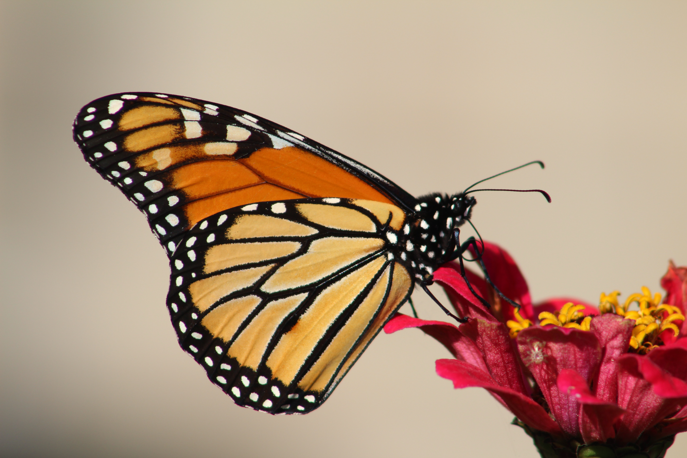

Butterflies (Rhopalocera) are insects that have large, often brightly coloured wings, and a conspicuous, fluttering flight. The group comprises the superfamilies Hedyloidea (moth-butterflies in the Americas) and Papilionoidea (all others). The oldest butterfly fossils have been dated to the Paleocene, about 56 million years ago, though they may have originated earlier.
